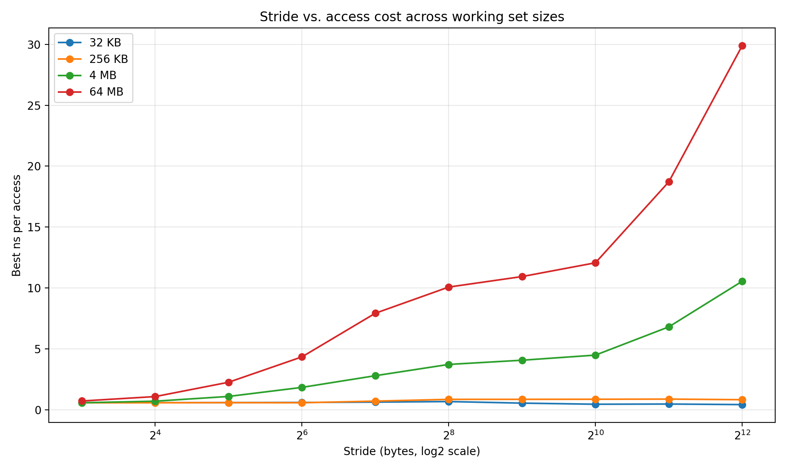
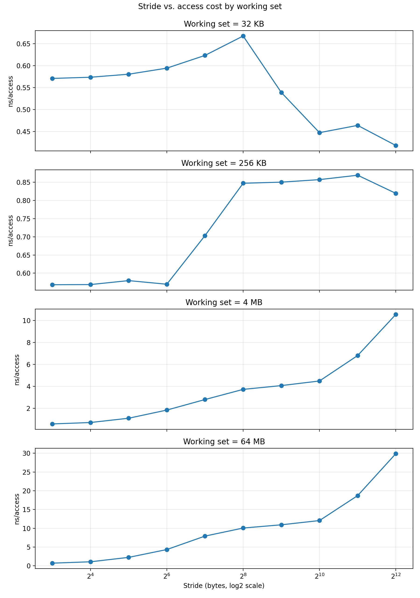

Stride vs Cache Miss: Why Memory Access Patterns Matter¶
Sequential access is fast.
Strided access silently kills performance.
Why This Experiment?¶
When we write code like this:
for (i = 0; i < N; i++)
sum += arr[i];
everything is fast.
But change it slightly:
for (i = 0; i < N; i += stride)
sum += arr[i];
…and performance can collapse.
Why does this happen?
This lab explores how memory access stride interacts with:
- Cache line size
- Spatial locality
- Hardware prefetching
- DRAM latency
Key Concept: Cache Line¶
Modern CPUs don't load 1 element at a time.
👉 They load 64 bytes at once (a cache line)
For uint64_t (8 bytes):
- 1 cache line = 8 elements
So:
| stride | cache line usage |
|---|---|
| 1 | 8 elements used |
| 2 | 4 elements used |
| 4 | 2 elements used |
| 8 | 1 element used |
| ≥16 | waste most of the line |
Experimental Setup¶
We measure ns per access while varying:
- Stride (in bytes)
- Working set size
Working Sets¶
| Size | Meaning |
|---|---|
| 32 KB | L1 cache |
| 256 KB | L2 cache |
| 4 MB | L3 / LLC |
| 64 MB | DRAM |
We also:
- Pin execution to a single CPU
- Normalize total accesses
- Use best-of-N timing
Results¶
Stride vs Access Cost¶

Per Working Set¶

What Happens?¶
1. Small working set (L1): No problem¶
- Flat performance (~0.5 ns)
- Stride barely matters
👉 Everything fits in L1 → almost all cache hits
2. Medium working set (L2): Slight slowdown¶
- Small increase (~0.6 → 0.85 ns)
👉 Cache still effective, but:
- Less reuse per cache line
3. Large working set (L3): Things get interesting¶
- Gradual increase (~0.5 → 10 ns)
👉 Now we see:
- Cache misses increasing
- Prefetcher struggling
- Cache line waste becoming visible
4. Huge working set (DRAM): Performance collapse¶
- ~1 ns → ~30 ns
👉 This is the key moment:
- Data no longer fits in cache
- Every access goes to DRAM
- Spatial locality is gone
The Critical Threshold: 64 Bytes¶
At:
stride ≈ 64 bytes
Something important happens:
- Before: multiple accesses per cache line
- After: only one access per cache line
👉 This is where efficiency drops sharply.
Hidden Player: Hardware Prefetcher¶
Why isn't the curve even worse?
Because CPUs try to help.
👉 Hardware prefetcher:
- Detects patterns
- Loads data in advance
But:
- Works well for small strides
- Fails for large strides
What You're Really Seeing¶
This graph is not just about "cache miss".
It's a combination of:
- Cache line utilization
- Spatial locality
- Prefetch behavior
- DRAM latency
Takeaway¶
Memory performance is not just about what you access, but how you access it.
Specifically:
- Sequential access → fast
- Large stride → slow
- Large working set + large stride → very slow
Summary¶
- Cache lines are the unit of memory transfer
- Stride reduces cache line utilization
- Larger working sets amplify the effect
- Performance transitions from:
- cache-bound → memory-bound